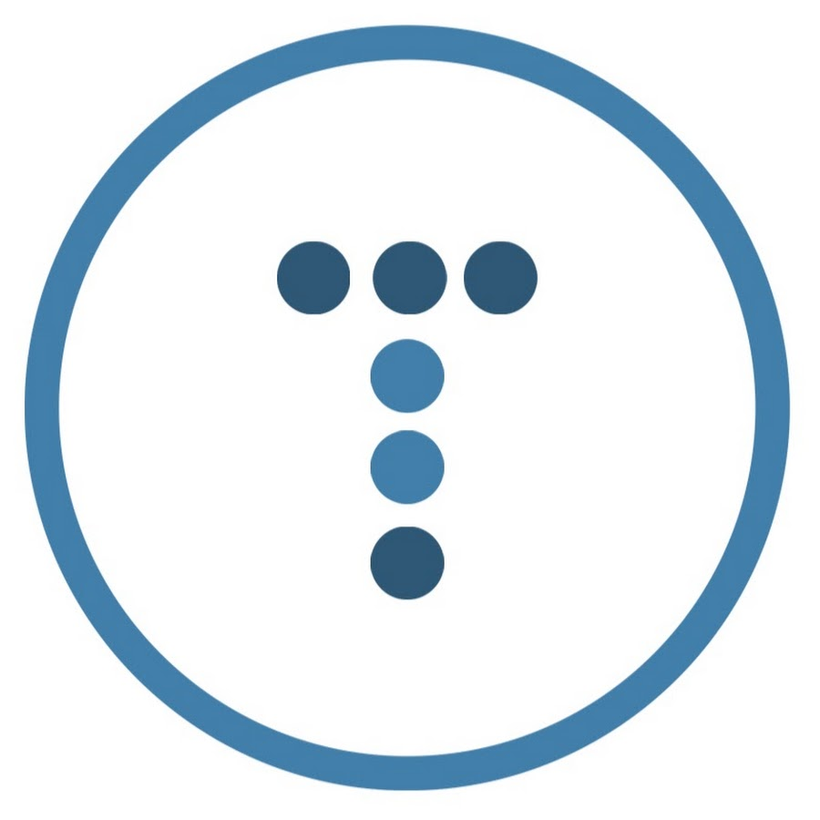

Inspired by the starter pack of Travis Neilson & Brad Traversy

Travis Neilson
@DevTips
@DevTips

Brad Traversy
@Traversy Media
@Traversy Media
Inspired by the starter pack of Travis Neilson & Brad Traversy
Riiiad-Starter-Kit-- assets/ | -- css/ | | -- 1-tools/ | | | -- bourbon/ | | | -- fonts.sass | | | -- normalize.sass | | | -- vars.sass | | -- 2-basics/ | | | -- body-elements.sass | | | -- links.sass | | | -- selection-colors.sass | | | -- typography.sass | | -- 3-modules/ | | | -- example-module.sass | | | -- example-module.sass | | -- 4-pages/ | | | -- example-page.sass | | -- main.sass | -- js/ | | -- main.js | -- img/ -- favicon.ico -- index.html